HOWTO: Setup Project in Eclipse for ICU4J
Draft-5
Ram Viswanadha, 2003 - 1 - 22
Introduction
This document describes how to use Eclipse to work with ICU4J. Eclipse is a free, open source, Integrated Development Environment (IDE) for Java development, available from eclipse.org.
The instructions in this document are specific to Eclipse version 2.0. Please checkout the “Getting started” section of the Eclipse FAQ for additional information.
The newsgroups can be accessed through a web interface. You will be asked for a username and password—the username is exquisitus and the password is flinder1f7.
Installation
1. Eclipse requires JDK/JRE 1.3.1 or later, installed as the default, in order to launch properly ( FAQ). Download and install JDK/JRE if one is not already installed.
2. Download a release of Eclipse SDK. Unzip the downloaded zip file to a reasonable location.
Perspectives and Views
Eclipse has the notion of perspectives and views. Broadly speaking a perspective is an interface with many views associated with it. In ICU4J you would mostly be working with “Java”, “Debug”, “Resource” and “Install & Update” perspectives. “Install & Update” perspective is used to install new features like C/C++ IDE or to update Eclipse itself.
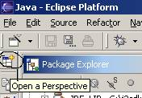
Configuring Eclipse
Select Window > Preferences to launch the preferences panel. An example snapshot of the panel appears below.
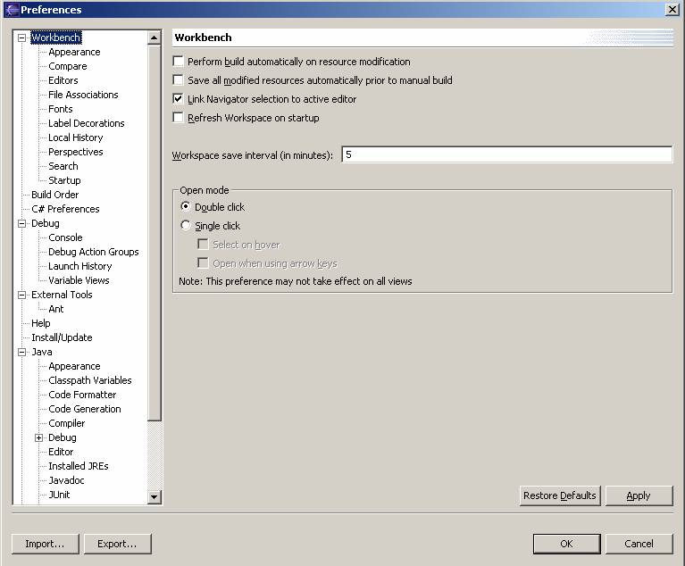
1) Select Workbench in
the left frame. Un-check “Perform build automatically on
resource modification” in the right frame.
2) In the left frame, select Workbench > Editors. In “Text
Encoding” section select “Other” and “US-ASCII” from the drop down menu.
3) Select Java > Compiler and set the warnings and errors as shown below.
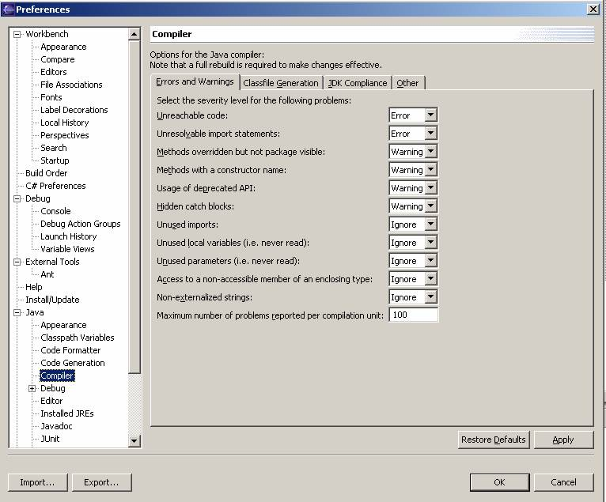
4) Select Java > Formatting and click the Style tab.
Indentation should be represented by tabs and tab size should be set to 4.
5) Select Java > Editor. Insert space for tabs should
be checked, and displayed tab width should be 4.
6) Select Java > Installed JREs. The default JRE will be present and
checked. Enter any additional JREs you wish to use.
7) Select Java > Templates. Select “filecomment” in the right pane and
click Edit.
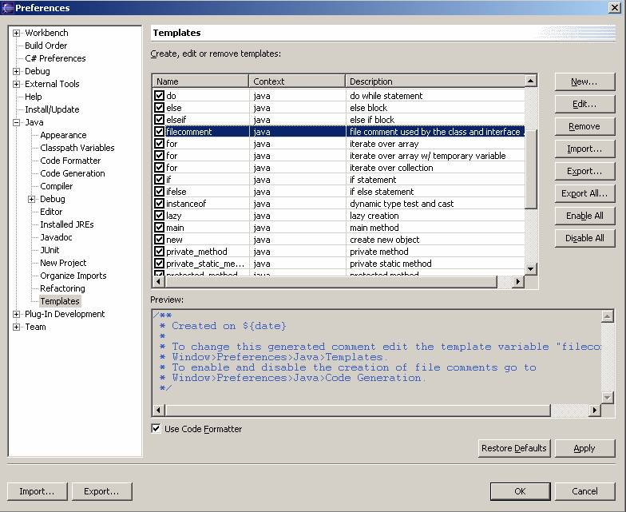
Add the following lines in the space
provided:
/*
*******************************************************************************
* Copyright (C) 2002-2004, International Business Machines Corporation and *
* others. All Rights Reserved. *
*******************************************************************************
*
* $$Source: /var/cvs/icu/web/icu.cupertino.ibm.com/htdocs/internal/eclipse/index.html,v $$
* $$Date: 2005/11/08 00:20:13 $$
* $$Revision: 1.1 $$
*
*******************************************************************************
*/
Select Java > Code Generation and check the “Create file comments for new files….” checkbox. Now every time a new class is created copyright notices are automatically added.
8) Select Team > CVS
i)
Check “Prune empty directories”.
ii)
Check “Show added/deleted markers”.
iii)
Check “Delete unmanaged resources on
replace”.
iv)
Set
“Compression Level” to “5” by selecting it from the drop down menu.
v) Set “Default keyword substitution” to “ASCII with Keyword expansion (-kkv)” by selecting it form the drop down menu.
CVS
To get to Repositories view, select Window > Show View > Other, expand CVS folder and double click on CVS Repositories.
To get the CVS Console view, select Window > Show View > Other, expand CVS folder and double click on CVS Console. This console shows a detailed log of CVS operations.
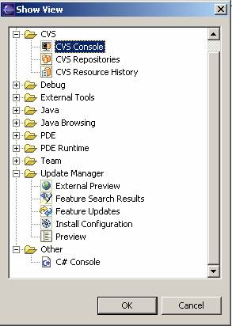
Set up CVS
1. Select Window > Show View > Other.
2. Expand the CVS folder and double click on “CVS Repositories”.
3. In the palette that is diplayed (“CVS Repositories” view), right click > select new > Repository location. This will show a dialog box. Enter appropriate data as shown below and click finish. A new repository location will be created with the information entered.
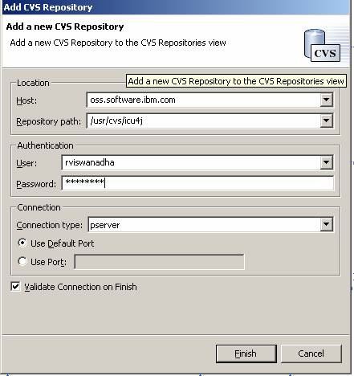
Play around to familiarize yourself with this view.
Creating project for ICU4J
There are two ways to create a project in Eclipse for ICU4J, a new project can be created and pointed to an existing workspace on the disk or a fresh check out can be performed to set up the workspace.
Existing Checkout
1. Select File > New. In the New Project dialog box that pops up, select “Java” in left pane and “Java Project” in the right pane. Click “Next”.
2. In the dialog box that pops up, uncheck the “Use Default” check box, input the project name and the location where the source of ICU4J currently resides, and click “Next”.
3. Set up the “src” directory as the source and “classes” directory as the output directories, and let the wizard guide you through the rest.
4. In the "Package Explorer" view of Java perspective, select the newly generated project > right click > Team > Share project. The wizard should guide you through specifying the repository location for updating the project.
Clean Checkout
From the CVS repositories view:
1. Expand the repository location > HEAD > icu4j.
2. Right click on icu4j and select “checkout as..”. This brings up New Project dialog box. Select “Java” in left pane and “Java Project” in the right pane. Click “Next”.
3. In the dialog box that pops up, uncheck the “Use Default” check box, input the project name and location where the new project should be created and click “Next”. At this point CVS checkout starts.
Note: Do not select “Checkout as project” on the context menu. This will automatically perform checkout and creates a generic project in the default location which is in <eclipse>/workspace directory.
Note: On LINUX set the project location to ~/icu4j to get it to check everything out into the right directory. Go through the verification process as explained below after the project is created.
From the File menu:
1. Select File > New. This brings up New Project dialog box. Select “Java” in left pane and “Java Project” in the right pane. Click “Next”.
2. In the dialog box that pops up, uncheck the “Use Default” check box, input the project name and location where the new project should be created and click “Next”.
3. Select the newly generated project > right click > Team > Share project. The wizard should guide you through for specifying a new repository location and synchronizing with the repository.
4. Right clicking in “Synchronizing view” gives the option to update from the repository in the context menu.
Verify Project Properties
Open Java Perspective. Select Window > Show View > Package Explorer. In the “Package Explorer” view, right click on the ICU4J project (folder) and select properties.
1. Select “Info” in the left pane and verify that “Path”, “Type” and location are set correctly.
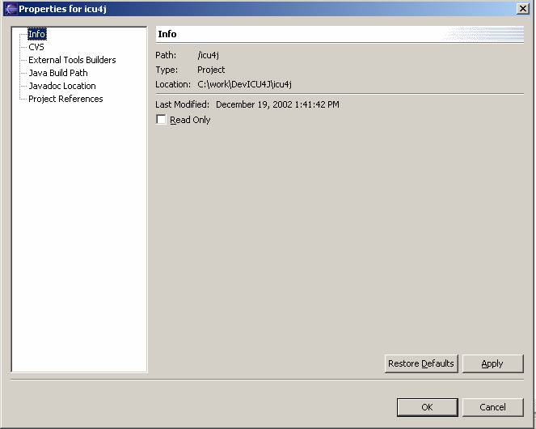
2. Select “CVS” in the left pane and verify the settings.
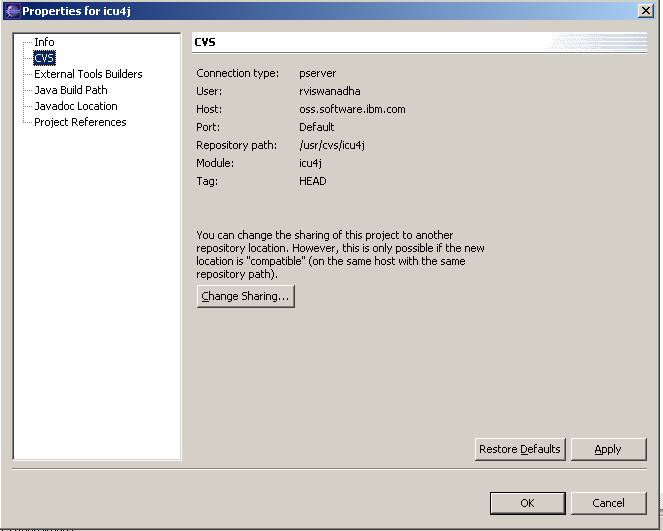
3. Select “Java Build Path” in the left pane
i)
Click on the “Source” tab and make sure the
settings are as shown below.
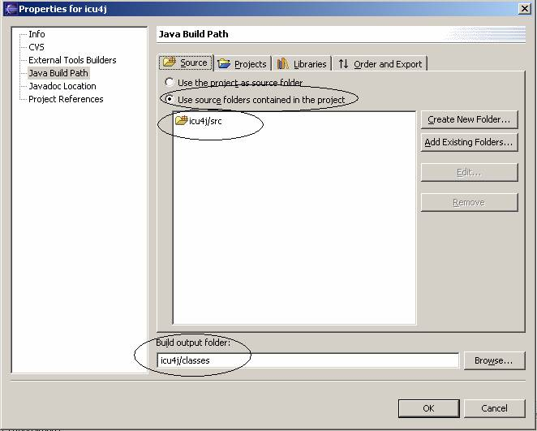
ii)
Click on the “Libraries” tab and verify the
jars are included as shown below. If any jar is not present, click on “Add
external jars” to navigate to the directory containing the jar you would like to
add and add it. “tools.jar”
is usually in <JDK Path>/lib.
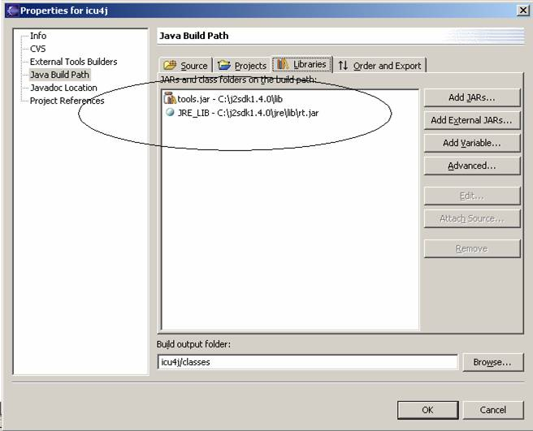
Building and Testing ICU4J
Open Java perspective and “Package Explorer” view. Select “build.xml” > right click > Run Ant. In the dialog box that pops up, check “core” and “tests” and click Finish.
Note: If JRE
is used launch Eclipse then special steps are need to run
“-Dbuild.compiler=org.eclipse.jdt.core.JDTCompilerAdapter” under
Arguments and check out this FAQ.
OR
Select Windows > Preferences from
the Eclipse Platform menubar
Select External Tools > Ant from the Preferences' window menu Select the
Classpath folder Click on
the Add Jar... button and add your PC's jdk tools.jar <(!example!>Apply changes
.
More information about ANT and
Eclipse can be found at the Eclipse Plug-in Corner and the
Ant Home page.
To run the tests launch configuration for TestAll.java should be created.
Create Launch Configuration
Launching a class in the debugger or just running it requires setting up of a “Launch Configurations”. To set up a launch configuration of a class select “Run” from the top toolbar and then select “Run…” or “Debug…” from the menu. Or you could launch the configuration like shown in the figure below:
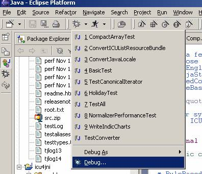 
All the above methods launch the configuration panel as shown below.
Select “Java Application” and click on “New”.
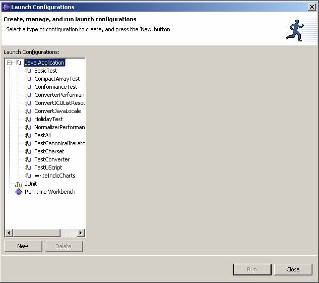
Enter the project, class name and other data for setting up the “Launch configuration”, click “Apply”, and then click “Run”.
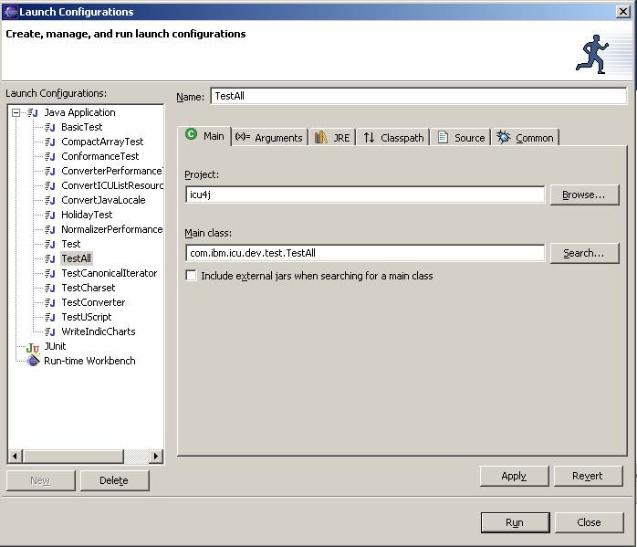
If the all the tests pass without any error, you have a good workspace of ICU4J.
Debugging
1) Create a launch configuration for the test class to be run.
2) Open the class in the editor by double clicking on the class file in “Package Explorer” view.
3) Set a break point as shown below or pressing “Ctrl+Shift+B” when then cursor is
placed on the line.
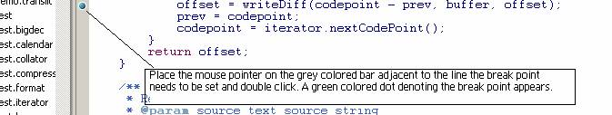
4) Click the debug icon just below the top menu bar. This will launch the debugger and the “Debug” perspective.
Using ICU4J repository from Eclipse
Care should be taken while adding/ deleting/ committing files to the ICU4J repository through CVS interface provided by Eclipse.
Committing edited files
To commit a file to the repository after editing follow the steps below:
i)
In the “Package Explorer” view of Java
perspective, right click on the project and select Team-> Update. This will
update your workspace.
ii)
Run all the tests again and verify that all
tests pass.
iii)
In the “Package Explorer” view of Java
perspective, right click on the project and select Team-> Synchronize with
Repository. This view will show all Incoming Changes, Outgoing Changes, and also
comes with an integrated diff tool. Double clicking on any file will launch the
diff tool.
iv) Once the changes made are verified, right click on the file and select “Commit” from the context menu. Enter the message for commit in the following format : “jitterbug <number>: <message>”.
Adding new files
Before checking in a new file into CVS please make sure you perform the following steps:
i) Verify that the file you are trying to add is of extension (*.java,*.txt) and content (Text, binary) known to Eclipse. Select Window -> Preferences, in the screen that is launched expand Team tree in the left column and select “File Content”. Check if the extension is present and contents section identifies the contents correctly.
ii)
ICU4J uses default Keyword
substitution for files. Ensure that the default is turned on for the
files you are adding into the repository. Right click on the file/directory
select Team from the context menu then select “Change ASCII/Binary Property”. In
the dialog box launched select “ASCII with keyword substitution” and from the
dropdown menu select “ASCII with keyword expansion
(--kkv)” and let the wizard guide you
to finish.
Note: Do not use WinCVS and Eclipse CVS at the simultaneously. This can cause problems since Eclipse maintains a backup database of all changes that you have made. If you do use WinCVS and Eclipse CVS you need to perform refresh ICU4J project by right clicking on the project in “Package Explorer” view of Java perspective and selecting “Refresh”.
Creating a Test Project that Depends on ICU4J
To create a test project that depends on ICU4J, follow the steps given below:
1. Select File > New >
Project.
2. In the dialog box that is launched select “Java” in the
left pane and “Java Project” in right pane and click “Next.”
3. Enter project name “test”, uncheck
“Use Default” check box and click “Browse” to select a directory where you want
the project to be created then click “Next”.
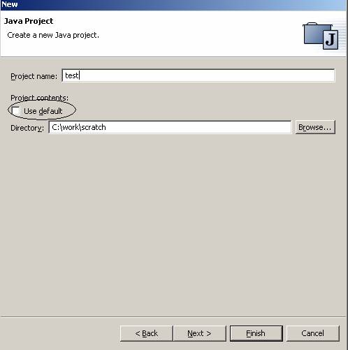
4. Check the “Use source folders contained in the project”
radio button. Click on “Create new folder” to create a new folder and set
the “Build output folder” as shown below. Then click “Finish”.
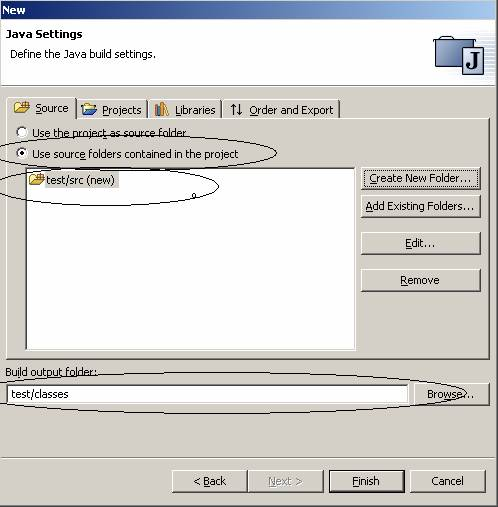
5. Verify the settings by right clicking on the project named
“test” in “Java” perspective in “Package Explorer” view and selecting
properties.
6. Select “Java Build Path” in the left pane and click on the “Projects” tab. Make sure “ICU4J” is on the build path.
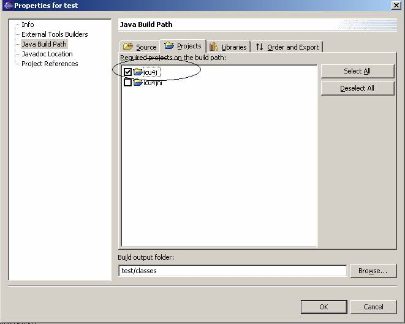
7. Select “Project References” in the left pane and check the
box to the left of folder named “ICU4J” and click ok.
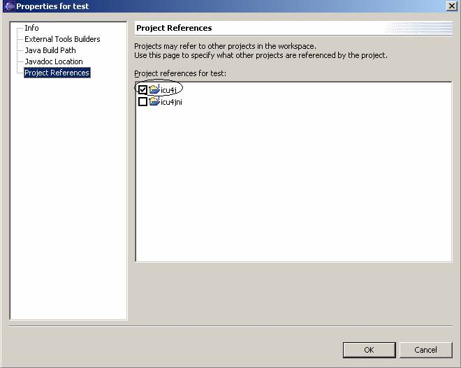
8. Add a new class to the project. Select the source folder in “Package Explorer” view > right click > New > Class.
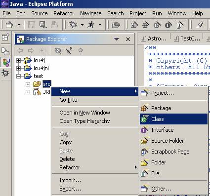
9. In the dialog launched, enter data appropriately and click
“Finish”.
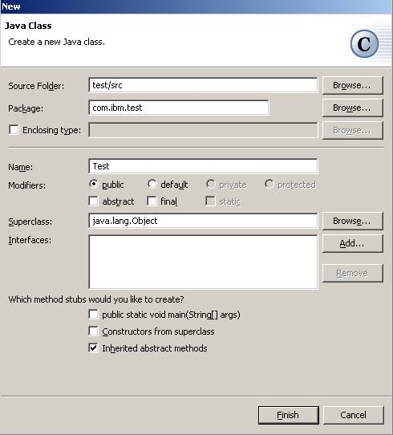
10.
At this point a class named “Test” in package
“com.ibm.test” will be
created with boiler plate code. Add the following code and try to compile and
run it.
packagecom.ibm.test;
importcom.ibm.icu.lang.*;
publicclassTest{
publicstaticvoidmain(String[]args){
System.out.println(UCharacter.isLegal(3));
}
}
Using Eclipse's default Java Builder w/ ICU4J (new in Eclipse 2.1)
With JDK 1.3.1 *or* JDK 1.4.1
- Right click the project in the “Java” Perspective or the “Resource” Perspective, and select “Properties” in the context menu.
- Select External Tool Builders in the left pane of the Property panel.
- Click the New... button on the right hand side
- Select Ant Build and then click the OK button
- Change the name to "Ant _resources"
- Click the Browse Workspace... button to the right of the Location box.
- Select the ICU4J project on the left hand side. build.xml will appear on the right hand side. Select it and click Ok.
- Select the Targets tab, uncheck the Run Default Target box. All targets will appear, select them all and click Remove
- Click Add. In the dialog which appears, check _resources and click OK.
- Click OK on the Properties for Ant _resources pane.
- Select Ant _resources and click on Up. (Not sure this is necessary, but it does work this way).
Now you should be able to use Eclipse's build commands to build your project.
With JDK 1.3.1:
- Right click the project in the “Java” or “Resource” Perspective and select Properties in the menu.
- Select Java Build Path on the left hand side of the Property panel
- Select the Source tab if it's not already selected.
- Click on the disclosure to open the icu4j/src folder. (the "+" on Windows, a triangle on Linux...)
- Select "Exclusion Filter: (none)" and click Edit... then click Add...
- Enter com/ibm/icu/dev/tool/docs/*.java in the text box and click OK.
- Click OK on the Source Folder Exclusion Patterns dialog.
- Select the Libraries tab and then click on Add External Jars...
- Navigate to <eclipse>/plugins/org.apache.xerces_4.07 and select both .jar files in that folder. Click OPEN. (OK on Linux)
- Click OK on the Properties for icu4j dialog.